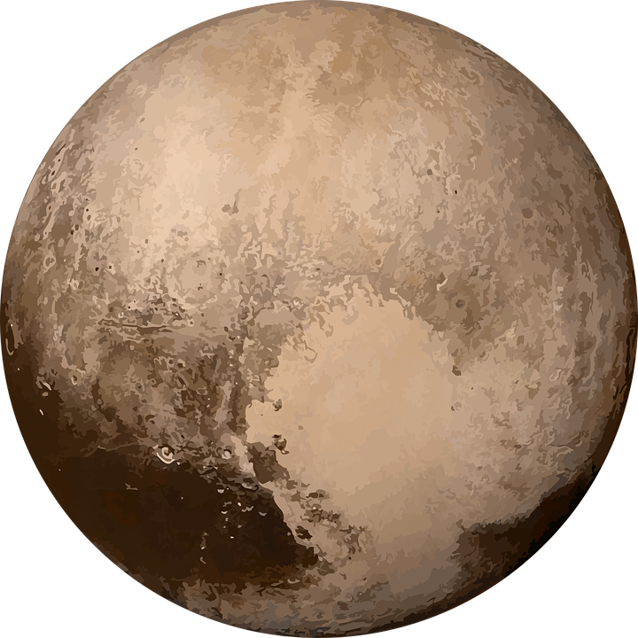

Popular destinations

Our home planet Earth is a rocky, terrestrial planet. It has a solid and active surface with mountains, valleys, canyons, plains and so much more.

Mars is the fourth planet from the Sun - a dusty, cold, desert world with a very thin atmosphere. Mars is also a dynamic planet with seasons, polar ice caps, canyons, extinct volcanoes

Pluto is a dwarf planet that lies in the Kuiper Belt, an area full of icy bodies and other dwarf planets out past Neptune.

THE MOON The moon is Earth's only natural satellite. The moon is a cold, dry orb whose surface is studded with craters and strewn with rocks and dust